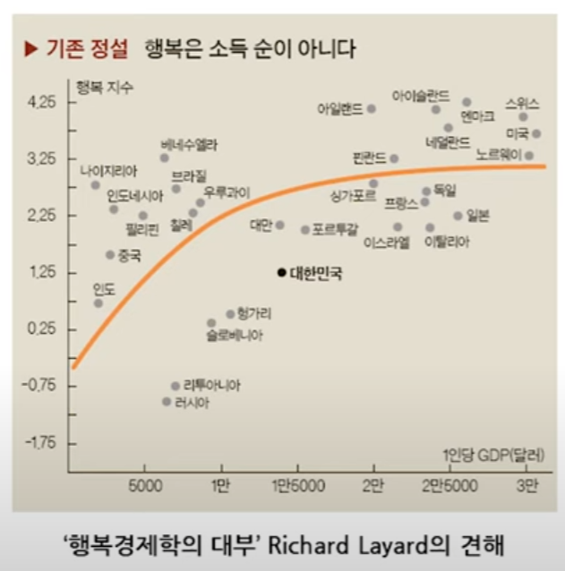
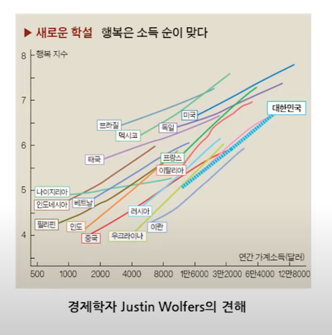

4강. 상관관계
지난 강의 요약
- 자연현상의 상당 수는 평균을 중심으로 좌우 대칭인 종모양의 정규분포를 따른다.
- 정규분포는 평균과 표준편차에 따라 그 모양과 크기가 달라진다.
- 특정 현상이 정규분포를 따른다면 그 현상의 평균과 표준편차만으로 해당 현상의 발생빈도를 완벽하게 묘사할 수 있다.
- 정규분포 중에서 평균이 0이고 표준편차가 1인 정규분포를 표준정규분포라고 한다.
- 어떤 자료에서 평균을 빼고 이를 표준편차로 나눈 것을 자료의 표준화라고 하며, 특정 자료가 정규분포를 따를 경우 이를 표준화 한 값은 표준정규분포를 따른다.
지난 강의 요약
- 특정 자료가 정규분포를 따를 때 해당 자료는 평균을 중심으로 ±1표준편차 이내에 전체 자료의 약 68%가, ±2표준편차 이내에 전체 자료의 약 95%가 포함된다.
- 특정 자료가 정규분포와 유사한 분포를 따를 경우 이 분포를 정규분포로 간주하고, 정규분포표를 사용하여 특정 구간 내에 속한 자료의 비중을 계산할 수 있으며 이를 정규분포로의 근사라 한다.
- 만약 특정 자료가 정규분포를 따르지 않을 경우 평균과 표준편차만으로 이 자료의 분포를 명확히 묘사할 수 없으며, 이 경우 자료를 100개의 균등한 영역으로 나눈 지점의 값인 분위수를 사용하는 것이 도움이 된다.
- 분위수를 활용하여 자료의 분포를 나타내는 대표적인 방식으로는 상자그림이 있다.
- 히스토그램이 서로 다른 자료의 분포를 비교하기 어려운 반면, 상자그림은 서로 다른 자료 간 분포를 비교하기 용이하다.
자료의 요약: 두 개의 변수
결합분포와 산포도 · 공분산 · 상관계수
결합분포와 산포도
결합분포(joint distribution): 하나의 변수에 대한 분포가 아니라 두 변수 사이의 상호관계를 고려한 분포
→ 산포도(scatter plot): 두 변수의 결합분포를 나타내기 위해 한 변수를 x축에, 다른 변수를 y축에 표시하여 점으로 나타낸 것

산포도에서 우리가 알 수 있는 값
- x의 평균과 표준편차
- y의 평균과 표준편차
→ x와 y는 평균과 표준편차를 통해 각각 요약 가능
→ 이것만으로 충분할까?
결합분포와 산포도
(a), (b) 모두 x, y의 평균과 표준편차는 동일, 하지만 x, y의 결합분포 특성은 다름
→ (a)와 (b)의 차이를 반영할 수 있도록 x와 y의 결합분포는 어떻게 요약할까?
공분산
두 변수의 선형관계를 나타내는 통계량
ax+by=c
표본 공분산의 자유도는 n−1
(∵ $\bar{x}$, $\bar{y}$가 주어져 있을 때 $\bar{y}$를 알더라도 $\bar{x}$를 구하기 위해서는
n−1개의 표본이 필요하므로)
- 공분산(Covariance): 하나의 변수에 대한
편차곱의 평균, 즉 분산(variance)를 두 변수에 대한 편차곱의 평균으로 바꾼 것
→ 공분산이 (+)이면 양의 관계, (−)이면 음의 관계
- 공분산의 한계:
서로 다른 관계들의 강도를 상호 비교하기 어려움
- 측정단위를 그대로 지님: x가 키(cm)이고 y가 몸무게(kg)일 경우 공분산은 cm*kg이라는 단위를 지님
- 값의 한계가 없음: 측정단위에 따라서 값이 크게 변하며 한계가 없음
→ 해결방법: 공분산을 두 변수의 표준편차로 나누어 표준단위로 변환하자!
상관계수
두 변수 간 선형관계의 방향과 강도를 측정단위와 무관하게 −1 ~ +1의 값으로 나타내는 통계량
$$r = \frac{\sum(x_i - \bar{x})(y_i - \bar{y})\,/\,(n-1)} {\sqrt{\sum(x_i - \bar{x})^2 / (n-1)} \cdot \sqrt{\sum(y_i - \bar{y})^2 / (n-1)}} = \frac{Cov_{xy}}{SD_x \cdot SD_y}$$
- 상관계수의 범위: −1 ≤ r ≤ +1
(1 또는 −1: 완전한 양의 상관 또는 음의 상관)
→ 모든 점들이 하나의 선 위에 위치
- 상관계수의 의미
두 변수의 결합분포가 하나의 선 주위로 밀집된 정도
= x의 1표준편차 변화에 따른 y의 표준편차 단위 변화량
주: 각각의 산포도는 가로, 세로 모두 평균 3, 표준편차 1의 동일한 값을 갖는다. 각각의 산포도에는 50개씩의 점이 찍혀 있다.
상관계수의 한계
상관관계는 두 변수의 선형관계의 방향과 강도를 측정하므로 다음의 두 상황에서 올바른 통계량이 될 수 없다.
- 특이한 값, 즉 이상치(outlier)가 존재할 때 → 이 값이 선형관계의 특성을 감소시킴
- 두 변수 간의 관계가 비선형일 때 → 선형관계를 측정하는 상관계수로는 두 변수 간 관계를 요약할 수 없음
상관계수의 한계
상관관계는 두 변수의 선형관계의 방향과 강도를 측정하므로 다음의 두 상황에서 올바른 통계량이 될 수 없다.
- 특이한 값, 즉 이상치(outlier)가 존재할 때 → 이 값이 선형관계의 특성을 감소시킴
- 두 변수 간의 관계가 비선형일 때 → 선형관계를 측정하는 상관계수로는 두 변수 간 관계를 요약할 수 없음
상관계수의 유의사항
- 상관관계(correlation)는 인과관계(causality)가 아님: 혼동요인(compounding factor)과 역(reverse)인과관계 때문
- 평균이나 비율의 상관관계는 주의: 평균이나 비율은 이미 편차를 감소시키기 때문
건강상태와 운동량의 관계
상관계수의 유의사항
- 상관관계(correlation)는 인과관계(causality)가 아님: 혼동요인(compounding factor)과 역(reverse)인과관계 때문
- 평균이나 비율의 상관관계는 주의: 평균이나 비율은 이미 편차를 감소시키기 때문


연습문제) 상관계수 구하기
Q) 두 변수 (X, Y)에 대한 자료가 (−1, 1), (0,0), (1,1)로 주어져 있다고 하자. X, Y 간의 상관계수는 얼마인가?
류근관, 5장 연습문제 3번
$$r = \frac{\dfrac{\sum(x_i - \bar{x})(y_i - \bar{y})}{n-1}} {\sqrt{\dfrac{\sum(x_i - \bar{x})^2}{n-1}} \cdot \sqrt{\dfrac{\sum(y_i - \bar{y})^2}{n-1}}} = \frac{Cov_{xy}}{SD_x \cdot SD_y}$$
- X의 평균: 0
- Y의 평균: 2/3
- X, Y의 공분산: (−1−0)*(1−2/3)+(0−0)*(0−2/3)+(1−0)*(1−2/3) = 0
평균, 분산, 표준편차의 중요성
우리가 분석하는 많은 지표나 분석법 등은 평균(중심경향성)과 표준편차(분산도)를 활용하거나 이를 변형한 것
$$I = \frac{\dfrac{\sum_i^n \sum_j^n w_{ij}(x_i - \bar{x})(x_j - \bar{x})} {\left(\sum_i^n \sum_j^n w_{ij}\right)}}{\dfrac{\sum_i^n (x_i - \bar{x})^2}{n}} = \frac{n \sum_i^n \sum_j^n w_{ij}(x_i - \bar{x})(x_j - \bar{x})} {\left(\sum_i^n \sum_j^n w_{ij}\right) \sum_i^n (x_i - \bar{x})^2}$$
오늘 강의 요약
- 하나의 변수에 대한 분포가 아니라 두 변수 사이의 상호관계를 고려한 분포를 결합분포라고 하며, 두 변수의 결합분포를 나타내기 위해 한 변수를 x축에, 다른 변수를 y축에 표시하여 점으로 나타낸 것을 산포도(scatter plot)이라고 한다.
- 평균과 분산이 동일한 두 변수가 존재하더라도 두 변수 간의 관계는 서로 다를 수 있다.
- 두 변수 간의 관계를 요약한 대표적인 수치는 두 변수 간 선형관계를 나타내는 공분산(covariance)이다.
- 공분산은 자료의 단위에 의존하기 때문에, 서로 다른 선형관계 간의 비교가 어렵다.
- 공분산의 단위를 제거하기 위해 두 변수 간 공분산을 각 변수의 표준편차로 나누어 −1~1사이의 값을 갖도록 조정한 통계량을 상관계수라 한다.
오늘 강의 요약
- 두 변수 간 관계가 음(−)의 상관관계를 가질 경우 −1에 가까운 값을, 정(+)의 상관관계를 가질 경우 +1에 가까운 값이 나타나며, 두 변수 간 선형관계가 존재하지 않을 경우 0에 가까운 값이 나타난다.
- 상관계수는 두 변수 간 선형관계만을 수치화하기 때문에 선형관계가 아닌 비선형 관계는 나타낼 수 없다.
- 상관계수는 이상치에 민감하다.
- 평균이나 비율로 계산한 상관계수는 이미 변수의 편차가 소거된 상태이기 때문에, 실제 두 변수 간의 선형관계를 왜곡할 여지가 있다.
- 상관관계는 두 변수 간의 선형의 연관성(association)만 나타낼 뿐이며, 인과관계(causality)는 아니다.
Q & A
권규상 Kyusang Kwon
kyusang.kwon@chungbuk.ac.kr